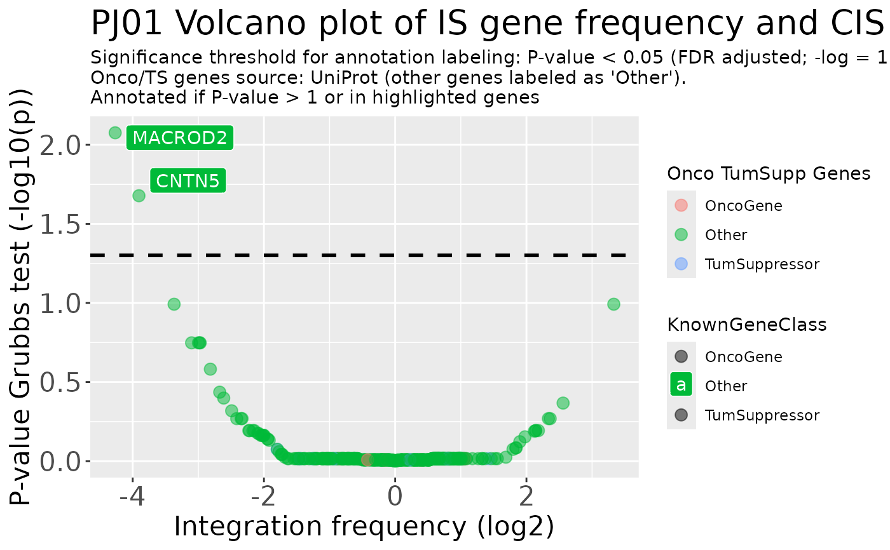

![[Stable]](figures/lifecycle-stable.svg) Traces a volcano plot for IS frequency and CIS results.
Traces a volcano plot for IS frequency and CIS results.
Usage
CIS_volcano_plot(
x,
onco_db_file = "proto_oncogenes",
tumor_suppressors_db_file = "tumor_suppressors",
species = "human",
known_onco = known_clinical_oncogenes(),
suspicious_genes = clinical_relevant_suspicious_genes(),
significance_threshold = 0.05,
annotation_threshold_ontots = 0.1,
highlight_genes = NULL,
title_prefix = NULL,
return_df = FALSE
)Arguments
- x
Either a simple integration matrix or a data frame resulting from the call to CIS_grubbs with
add_standard_padjust = TRUE- onco_db_file
Uniprot file for proto-oncogenes (see details). If different from default, should be supplied as a path to a file.
- tumor_suppressors_db_file
Uniprot file for tumor-suppressor genes. If different from default, should be supplied as a path to a file.
- species
One between
"human","mouse"and"all"- known_onco
Data frame with known oncogenes. See details.
- suspicious_genes
Data frame with clinical relevant suspicious genes. See details.
- significance_threshold
The significance threshold
- annotation_threshold_ontots
Value above which genes are annotated with colorful labels
- highlight_genes
Either
NULLor a character vector of genes to be highlighted in the plot even if they're not above the threshold- title_prefix
A string or character vector to be displayed in the title - usually the project name and other characterizing info. If a vector is supplied, it is concatenated in a single string via
paste()- return_df
Return the data frame used to generate the plot? This can be useful if the user wants to manually modify the plot with ggplot2. If TRUE the function returns a list containing both the plot and the data frame.
Details
Input data frame
Users can supply as x either a simple integration matrix or a
data frame resulting from the call to CIS_grubbs.
In the first case an internal call to
the function CIS_grubbs() is performed.
Oncogene and tumor suppressor genes files
These files are included in the package for user convenience and are
simply UniProt files with gene annotations for human and mouse.
For more details on how this files were generated use the help
?tumor_suppressors, ?proto_oncogenes
See also
Other Plotting functions:
HSC_population_plot(),
circos_genomic_density(),
fisher_scatterplot(),
integration_alluvial_plot(),
sharing_heatmap(),
sharing_venn(),
top_abund_tableGrob(),
top_cis_overtime_heatmap()
Examples
data("integration_matrices", package = "ISAnalytics")
cis_plot <- CIS_volcano_plot(integration_matrices,
title_prefix = "PJ01"
)
#> Calculating CIS_grubbs for x...
#> Warning: Warning: missing genes in refgenes table
#> ℹ A total of 5 genes were found in the input data but not in the refgene table. This may be caused by a mismatch in the annotation phase of the matrix. Here is a summary:
#> GeneName GeneStrand chr
#> <char> <char> <char>
#> 1: CRELD2 - 15
#> 2: HTR4 + 6
#> 3: UBE2D2 + 16
#> 4: LINC01133 + 19
#> 5: PLEKHG4B - 14
#> ℹ NOTE: missing genes will be removed from the final output! Review results carefully
#> ℹ A total of 25 IS will be removed because of missing genes ( 1.48 % of total IS in input)
#> Loading annotated genes - species selected:
#> • Homo sapiens (Human)
#> Loading annotated genes - done
cis_plot
